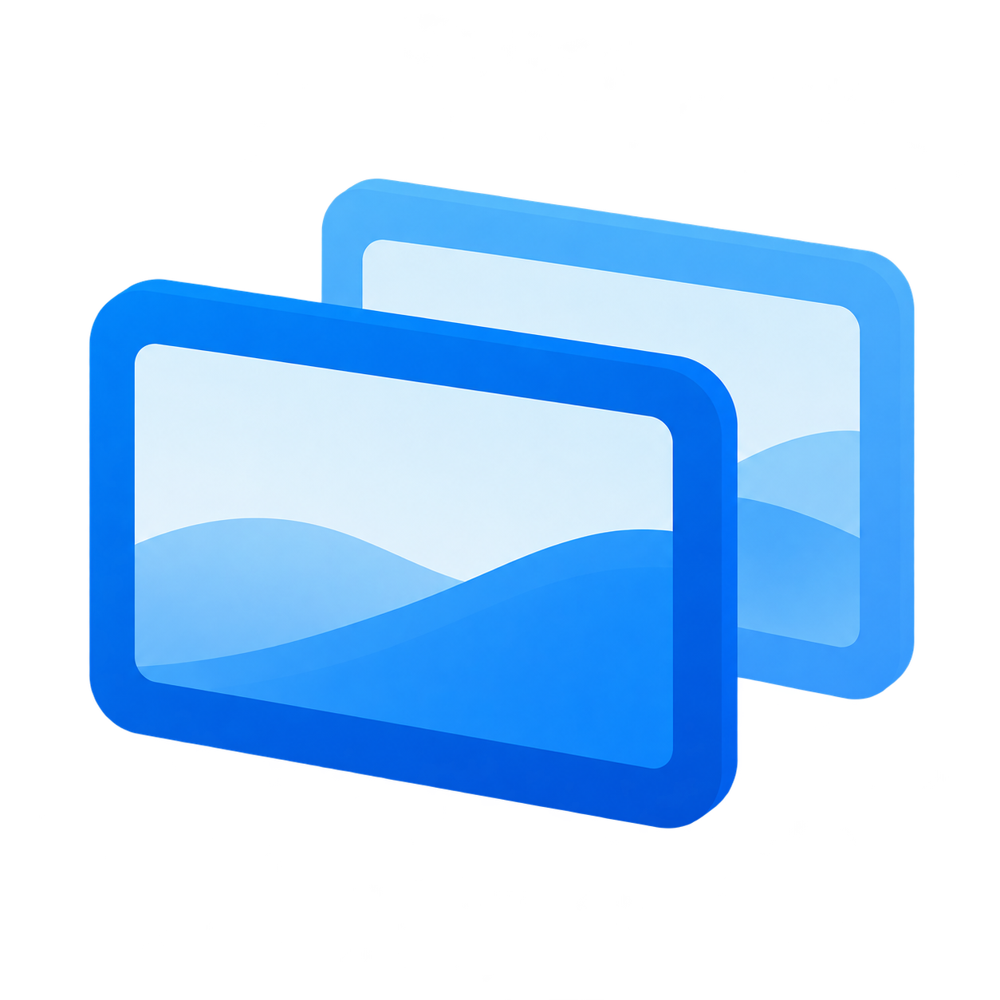

Only the icons switch.
Your wallpaper, taskbar and application windows remain in place. DeskPages organizes desktop files and shortcuts into pages.

DeskPagesSeparate your desktop icons into pages for work, study and everything else. Switch the context. Keep your files exactly where they belong.
Windows 11 x64 · Alpha preview · No account or cloud upload
Win + arrows to switch on the desktop
DeskPages · changes save automatically
Demo preferences apply to this preview.
Try it: switch pages with the arrows, swipe on your phone, or drag a file to an outer edge. Click the tray icon to open the page picker. “Watch file move” demonstrates an edge drag.
Browser recreation based on DeskPages 0.8.8 behavior and production UI. It does not control your real desktop. Original Windows-rendered app screenshots are shown below.
Your wallpaper, taskbar and application windows remain in place. DeskPages organizes desktop files and shortcuts into pages.
Hold it at an outside screen edge, wait for the page to switch, then drop it. Its page membership changes; its file path does not.
Win + ← / → while on the desktop, supported touchpad gestures, or the compact page picker in your tray.
These images are rendered from the production WinForms code on Windows, using example page data. They are not AI images or redesigned mockups.


The images demonstrate the real application windows. They are not a recording of Explorer, physical touchpad input or a full Windows installation test.
Download the Windows 11 x64 Alpha from the official GitHub release.
This is an unsigned Alpha preview. Windows may show an unknown-publisher or SmartScreen warning. Review the release notes and checksums before running it. Uninstall through Windows Settings. If the agent is unavailable, use DeskPagesRescue.exe; do not manually delete page metadata while icons are hidden.
Release notes and checksums ↗DeskPages ينظّم أيقونات سطح مكتب ويندوز في صفحات. التنقل يغيّر الأيقونات الظاهرة فقط؛ الخلفية والنوافذ المفتوحة ومسارات الملفات تبقى كما هي. جرّب المحاكاة أعلاه أو شاهد صور واجهة البرنامج الأصلية.